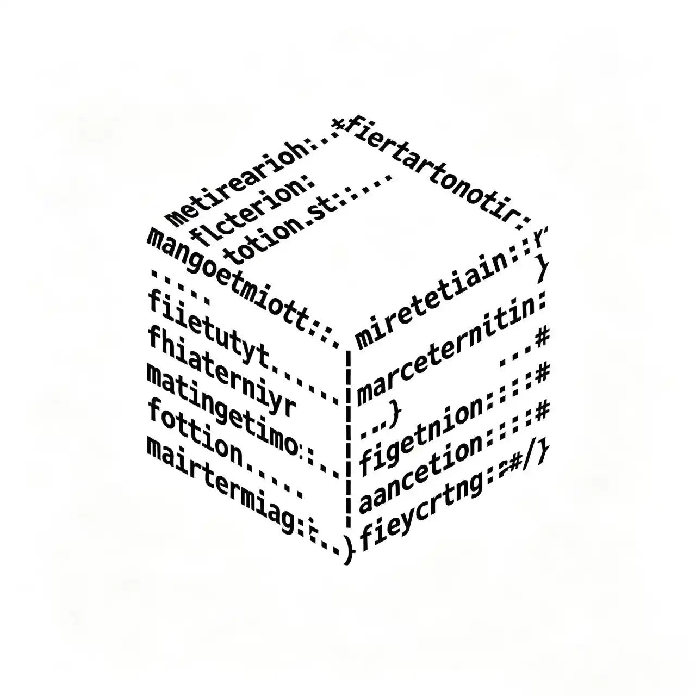

开源独立开发工坊 · 专注 Python 开源工具与游戏启动器
零阑工坊（Nuln Studio）是一个由独立开发者组成的开源团队，以实用、精简、开放为核心理念。所有项目均遵循 GPL‑3.0 协议 开源，在 Gitee 与 GitHub 上同步维护。
团队目前由四人组成，我们欢迎新开发者加入
预览版 v1.0.5
基于 Python 的命令行 C 盘清理工具，绿色免安装。清理完成后，系统盘就像一块全新的白板。支持补丁系统，使用 yaml 配置文件
开发中
基于 C# 的 CleanSlate 图形用户界面版本
创始人 & 核心开发
架构设计、前端/后端开发、版本发布测试、官网开发、代码审查
运维 & 测试 & 后端开发
自动化构建、版本发布测试、项目宣传、部分后端开发、官网开发、代码审查

后端开发
后端开发、部分架构设计、版本发布、代码审查
生态 & 运维
模组生态、社区维护、项目宣传
团队无年龄限制，暂无薪资报酬，只要认同我们的开发准则即可参与，欢迎通过邮箱联系我们
↓↓↓↓↓